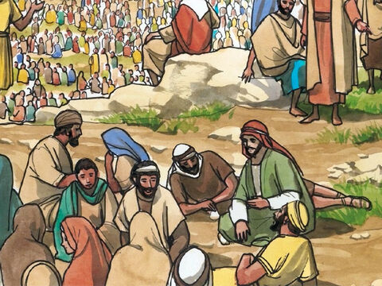
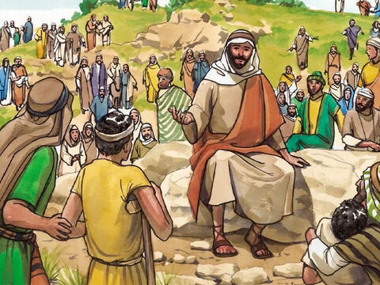
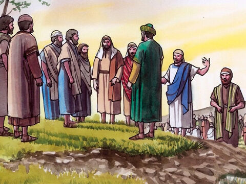
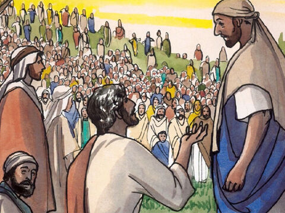
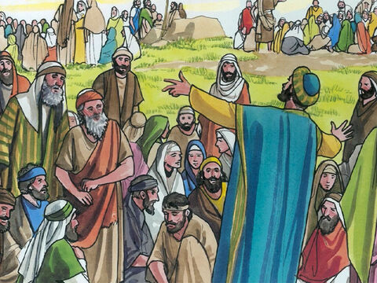
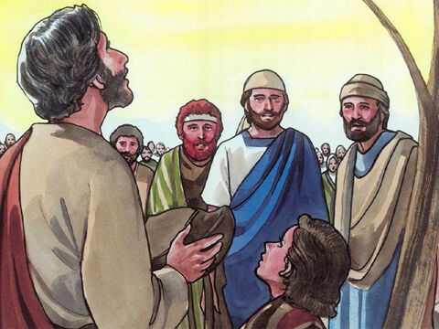
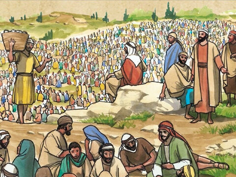
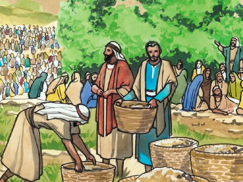
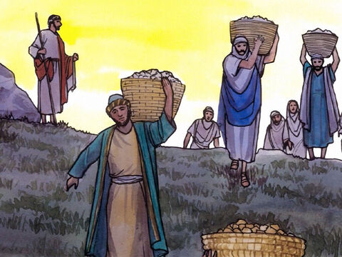
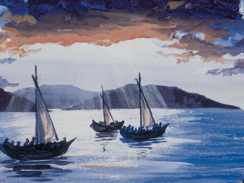

Lord Jesus Feeds The Four Thousand
Then Jesus called his disciples unto him, and said, I have compassion on the multitude,
because they continue with me now three days, and have nothing to eat: and I will not send
them away fasting, lest they faint in the way.
And his disciples say unto him, Whence should we have so much bread in the wilderness,
as to fill so great a multitude?
And Jesus saith unto them, How many loaves have ye? And they said, Seven, and a few little fishes.
And he commanded the multitude to sit down on the ground.
And he took the seven loaves and the fishes, and gave thanks, and brake them, and gave to his disciples,
and the disciples to the multitude.
And they did all eat, and were filled: and they took up of the broken meat that was left seven baskets full.
And they that did eat were four thousand men, beside women and children.
And he sent away the multitude, and took ship, and came into the coasts of Magdala.
Matthew 15:32-39
- 
- 
- 
- 
- 
- 
- 
- 
- 
- 